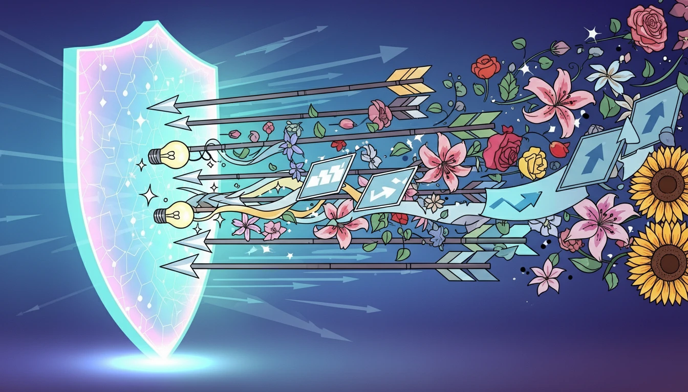

How to Handle Sales Objections: 7 Proven Techniques (2025)

Objections aren't rejections—they're buying signals. Here's how to turn "no" into "yes."
Mindset Shift: Objections Are Good
Bad mindset: "They said no. This deal is dead."
Good mindset: "They're engaged. They're thinking. Now I can address their concerns."
Truth: People only object when they're considering buying. If they weren't interested, they'd ghost you.
The 7 Most Common Sales Objections
1. Price Objection: "It's too expensive."
What they really mean: "I don't see the value yet."
How to handle it:
- Don't defend the price. Instead, reframe it as an investment.
- Ask: "Compared to what?" (Force them to articulate the comparison)
- Quantify the cost of inaction: "How much is this problem costing you per month?"
- Break down the cost: "$5,000/year = $13/day. Less than a coffee per employee."
Example response:
"I understand budget is a concern. Can I ask—what's the
cost of not solving this problem? If you're losing 10 hours/week to manual work, that's costing
you far more than our solution."
2. Timing Objection: "I need to think about it."
What they really mean: "I'm not convinced yet" OR "This isn't a priority."
How to handle it:
- Ask: "What specifically do you need to think about?" (Uncover the real objection)
- Create urgency: "What happens if we don't solve this by [deadline]?"
- Offer a follow-up: "Let's schedule 15 minutes next week to discuss any questions."
Example response:
"Fair enough. To help you think it through—what information
would make this an easy decision? And what's your timeline for solving this problem?"
3. Authority Objection: "I need to talk to my boss/team."
What they really mean: "I'm not the decision-maker."
How to handle it:
- This means you didn't qualify properly. Ask early: "Who else is involved in this decision?"
- Don't waste time presenting to non-decision-makers
- Offer to join the conversation: "Happy to join that call and answer any questions they have."
Example response:
"That makes total sense. To make sure we're all on the same
page, could we schedule a brief call with you and your boss? I can walk through the proposal and
address any concerns."
4. Competitor Objection: "We're already using [competitor]."
What they really mean: "Why should I switch?"
How to handle it:
- Don't trash the competition. Ever.
- Ask: "What do you like about them? What's missing?"
- Position yourself as the better fit for their specific needs
Example response:
"That's great—they're a solid company. Out of curiosity,
what made you take this call? Is there something about your current solution that's not quite
working?"
5. Trust Objection: "I've never heard of you."
What they really mean: "Prove you're legit."
How to handle it:
- Share case studies and testimonials
- Offer a trial or pilot program
- Name-drop similar customers (if allowed)
Example response:
"Totally fair. We're newer, but we're already working with
[similar company]. Here's a case study showing how we helped them [specific result]. Would a
30-day trial help you decide?"
6. Feature Objection: "You don't have [specific feature]."
What they really mean: "This feature matters to me."
How to handle it:
- Ask why they need it: "How important is that feature to your decision?"
- Offer workarounds if you can
- Highlight your differentiators
Example response:
"Great question. We don't have that exact feature, but
here's how our customers solve that: [workaround]. The tradeoff is we excel at [your strength].
Would that work for you?"
7. Status Quo Objection: "We're fine with how things are."
What they really mean: "Change is risky."
How to handle it:
- Challenge the status quo: "What if your competitors are solving this faster?"
- Highlight the cost of standing still
- Paint the future: "Where do you want to be in 12 months?"
Example response:
"I hear you. But if you're fine now, what happens in 6
months when [industry change]? The companies we work with saw this coming and acted early."
The LAIR Framework for Handling Objections
Use this 4-step framework for ANY objection:
- Listen: Let them finish. Don't interrupt.
- Acknowledge: "I understand why you'd feel that way."
- Identify: Ask probing questions to find the root cause.
- Reverse: Reframe the objection or offer a solution.
Example in action:
Prospect: "This is too expensive."
You: (Listen) "I appreciate you being upfront about that. (Acknowledge) Can I
ask—is it the total cost, or the ROI you're concerned about? (Identify) Because if we can show
you'll save $20K/year, would that change the equation? (Reverse)"
Pro Tips for Objection Handling
- Anticipate objections early: Bring them up before the prospect does
- Never argue: You'll win the argument but lose the sale
- Use social proof: "Others felt the same way until they saw [result]"
- Isolate the objection: "If we solve this, is there anything else holding you back?"
- Practice: Role-play common objections with your team weekly
When to Walk Away
Not every objection can (or should) be overcome. Walk away if:
- They're genuinely not a fit
- They don't have budget (and won't get it)
- They're not the decision-maker and won't introduce you
- They're wasting your time with endless objections
Your time is valuable. Spend it on winnable deals.
Conclusion
Objections are part of sales. The best reps welcome them because they know how to turn resistance into trust. Use the LAIR framework, anticipate common objections, and practice your responses.
Master objection handling, and you'll close more deals. Want to improve discovery? Read 50+ Open-Ended Sales Questions.